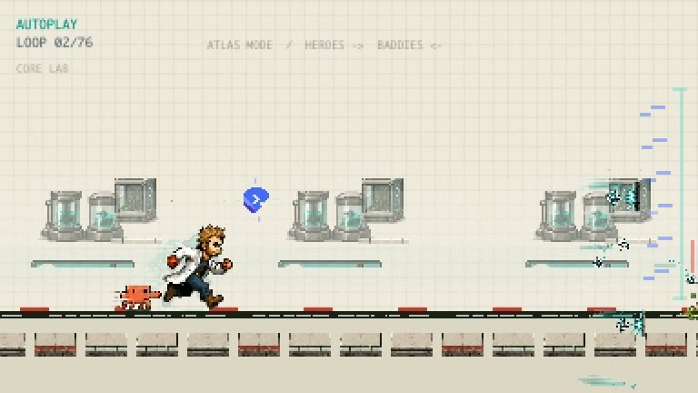

C2BioTools

Codex Surface Atlas
Discover cell-surface targets, screen molecules, and generate protein binders in Codex.
Explore example campaignBio × AI · Research ↔ Agents · Lab-in-the-loop
Bio × AI. Building AI tools for life science research, including agentic systems for bioinformatics, structural biology, biomanufacturing, and automated labs. AI progress will ideally speed up the pace of research so people can live healthier, longer lives.
Shared repos include harnesses for long-running multi-agent work, molecular biology suite tools for researchers, and general-purpose AI agent skills.



AI-agent toolkit for structural biology: design binders, map structures, screen candidates, rank results, and prepare cloud-scale runs.

A molecular biology workbench for Claude Science. View maps and alignments, make entries and notes, and more — all without leaving Claude Science.
Discover cell-surface targets, screen molecules, and generate protein binders in Codex.
Explore example campaign
Design protein binders in Codex: pick target sites, tools, license, and budget, then get sequences and predicted structures.

Claude Code skill for orchestrating Codex and Claude worker fleets with campaign state, worktrees, review gates, and resumable plans.

Small-molecule design workflows: choose tools, plan synthesis, dock ligands, and check ADMET.

Genome-mining workflows for natural products: search public genomes and transcriptomes, compare candidate clusters, and plan follow-up work.

Let your main coding agent assign work to independent agent harnesses like Pi, OpenCode, OMP, and more.

Biosynthetic route exploration for target molecules: find enzyme and gene candidates and turn pathway ideas into follow-up searches and experiments.

Cryo-EM workflows for maps, models, figures, state comparison, and local or cloud compute preparation.

Fermentation and biomanufacturing experiment planning: choose design families, check scale context, and prepare run packets.

Run agent workflows on cloud compute with preflight checks, cost caps, artifact receipts, and cleanup.

Structural biology superpowers for AI coding agents: PyMOL, ChimeraX, AlphaFold DB, RCSB PDB, UniProt, and Rosetta workflows.

Talk to your protein structures. Voice control for PyMOL, ChimeraX, AlphaFold, and Rosetta on the OpenAI Realtime API.

Local speech stack for Apple Silicon: TTS, ASR, forced alignment, voices, daemon, and MCP bridge.

Local-first bridge: OpenAI Codex Desktop ↔ Telegram bot. Text, files, voice notes, and optional realtime calls.

Skill that scaffolds a multi-model chatbot for Telegram or Discord. Claude, GPT, Gemini, and OpenAI-compatible backends. Only approved users can reach it, with prompt injection blocked by default.

Portable skill for adding a Claude Code lane to OpenAI Symphony + Linear workflows.

Self-improving starter skill / operator toolkit for Codex or Claude Code as orchestrator over Symphony workers + Linear.

AI Agent Tool for terminal-first YouTube search, download, catalog, and clip tooling on yt-dlp.

System-wide voice-to-text for macOS. Hold a hotkey, speak, text appears at your cursor. OpenAI / Gemini / Apple Speech / local — bring your own keys.